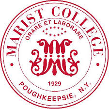

Education
Marist College, Poughkeepsie, NY
Bachelor of Computer Science, May 2020
Major: Computer Science, Concentration: Software Development
Minors: Business, Information Technology, and Information Systems

Northern Valley Old Tappan High School, Old Tappan, NJ
High School Diploma